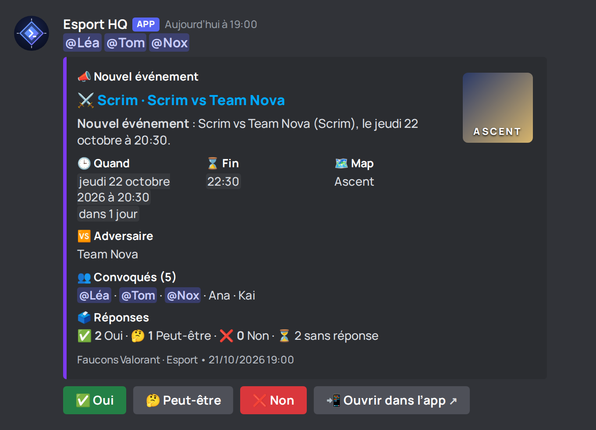
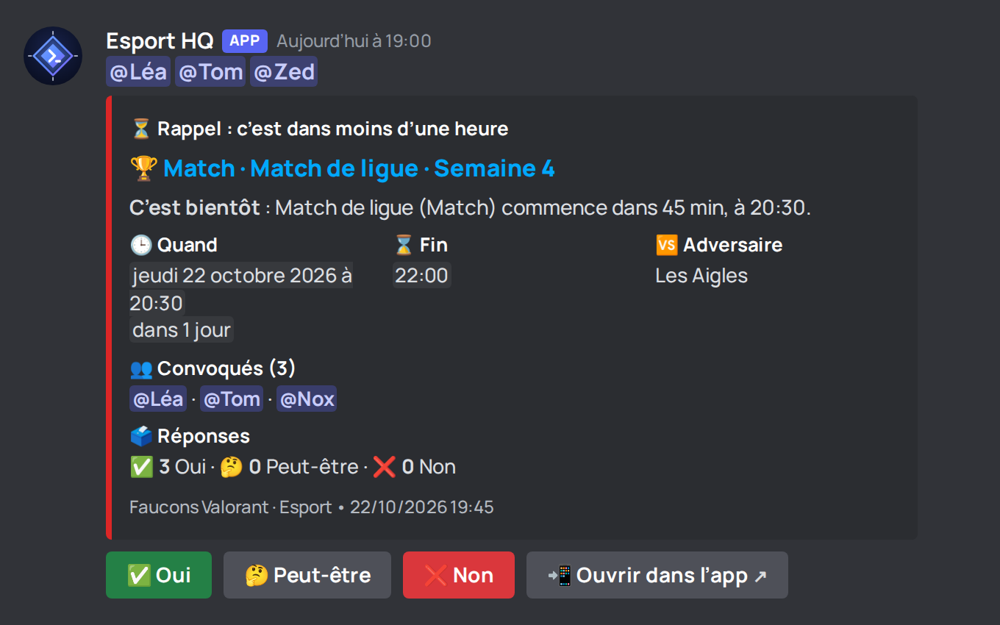
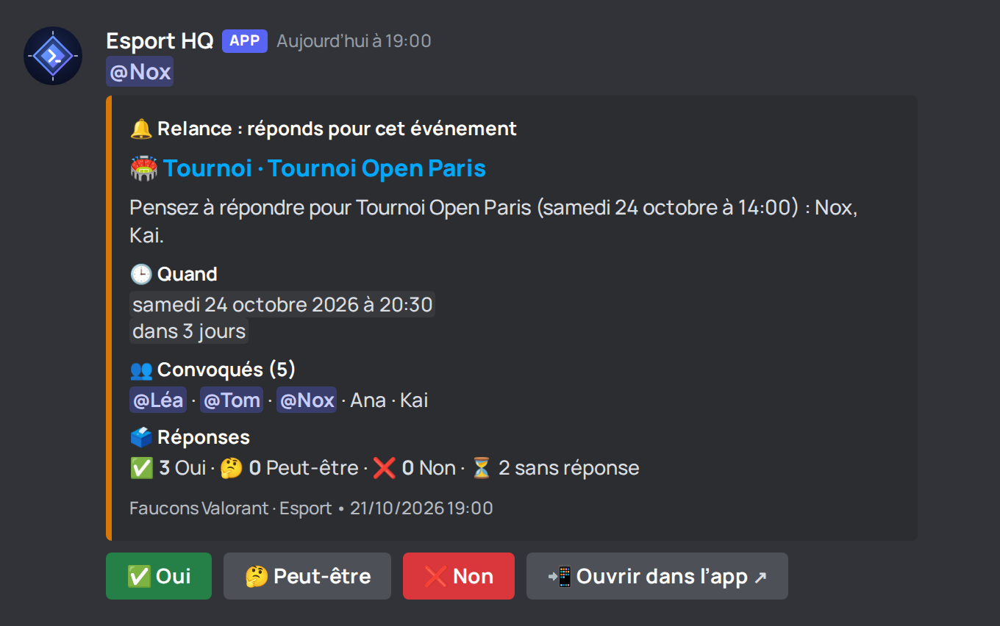
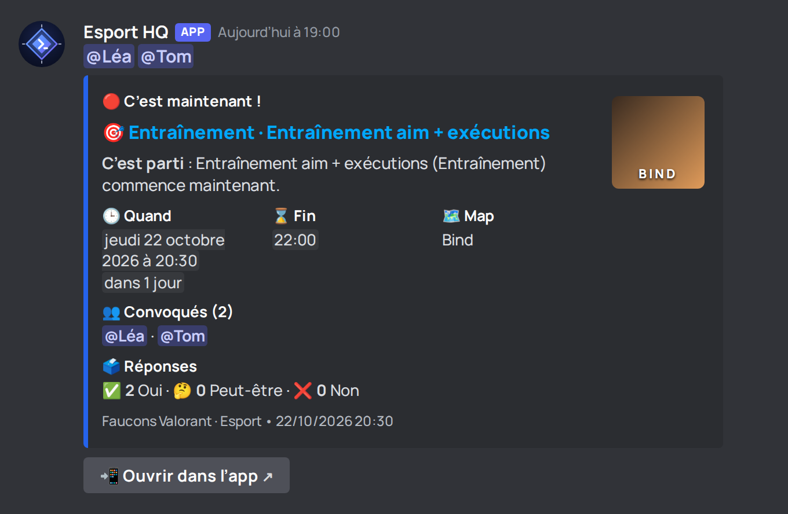
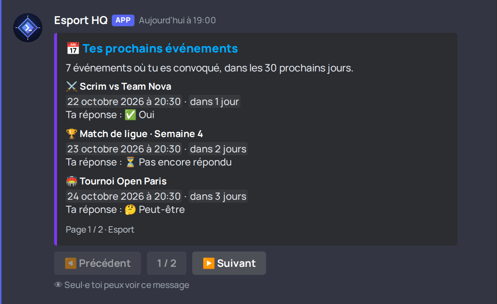
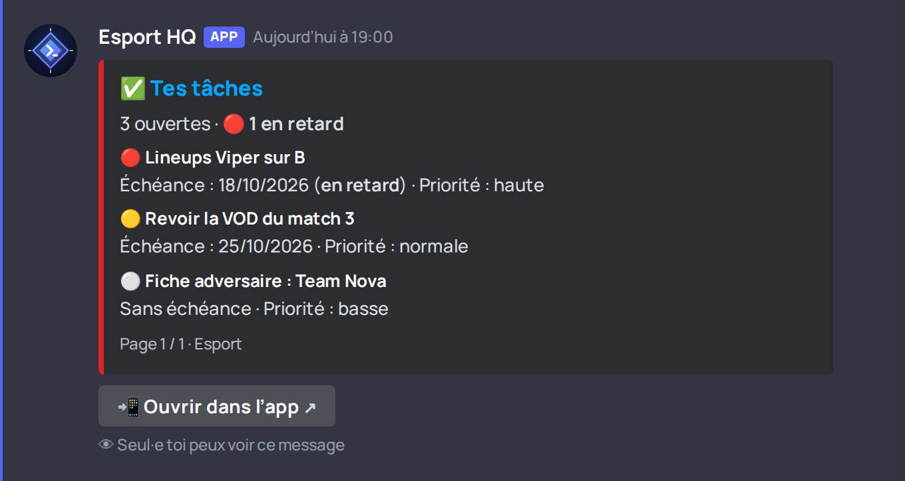
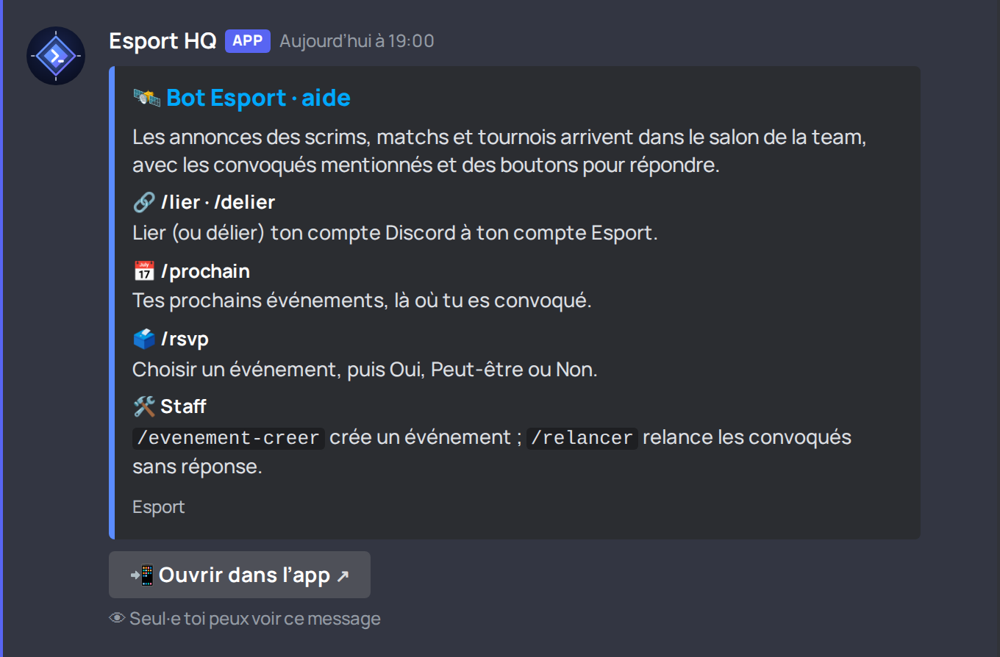
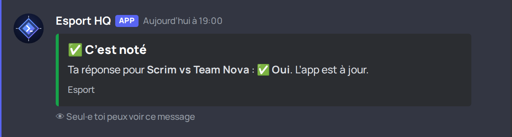

Aperçus des messages du bot
Annonce d’un scrim

Rappel H-1 d’un match

Relance groupée des sans-réponse

« C’est maintenant » d’un entraînement

Réponse à /prochain (éphémère, paginée)

Réponse à /taches

Réponse à /aide

Clic sur « Oui » (réponse éphémère)
